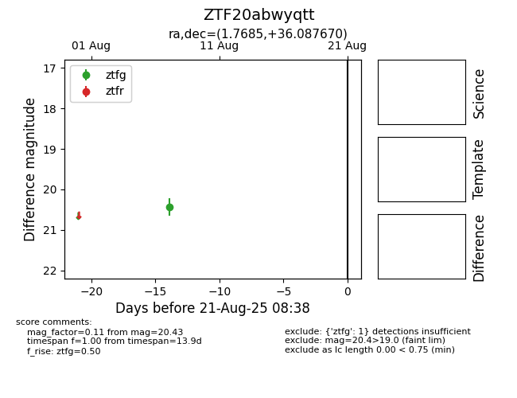

Target ZTF20abwyqtt at 2025-08-21 08:38, see:
FINK: fink-portal.org/ZTF20abwyqtt
Lasair: lasair-ztf.lsst.ac.uk/objects/ZTF20abwyqtt
ALeRCE: alerce.online/object/ZTF20abwyqtt
alt names
ZTF20abwyqtt (ztf,alerce)
coordinates:
equatorial (ra, dec) = (1.7685,+36.08767)
galactic (l, b) = (112.9784,-25.92516)
photometry
last ztfg=20.43
1 ztfg detections
